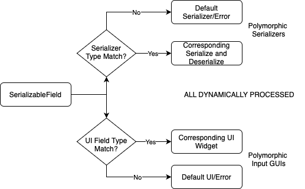
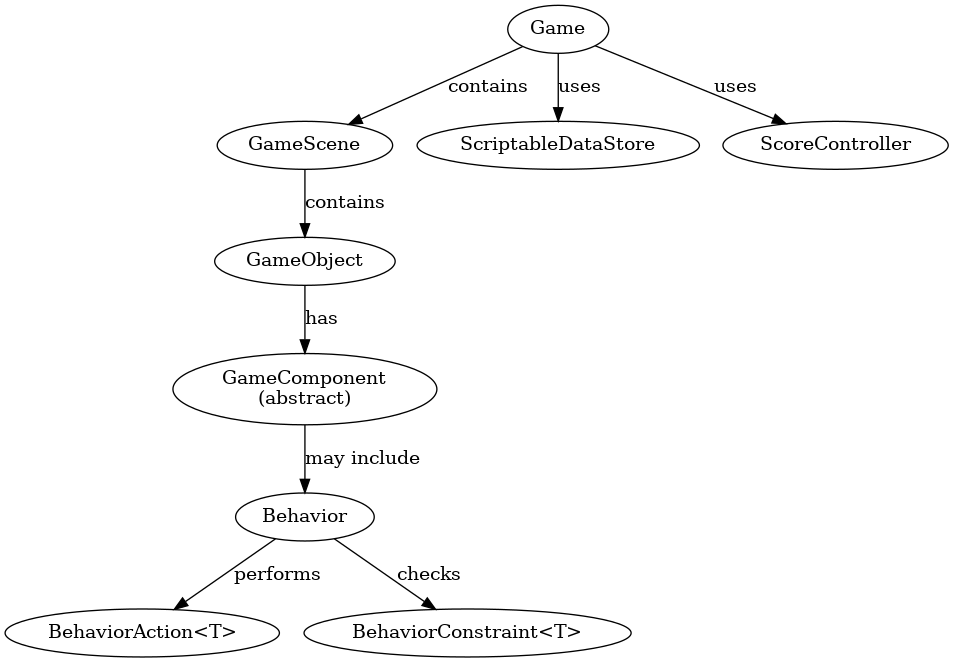
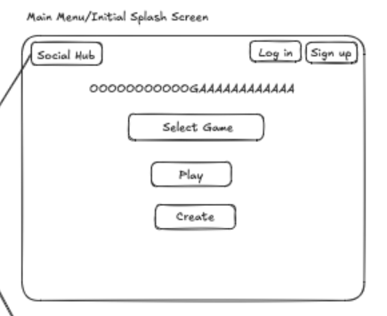

class: center, middle # PLATFORMERS ## Team 02 Final Presentation > Contributors: Justin Aronwald, Christian Bepler, Calvin Chen, Logan Dracos, Aaron Liao, Jack Regan, Danny Rodriguez-Florido, Reyan Shariff --- # DEMO - Game Player - Authoring Environment - Social Hub + Profiles --- # DESIGN --- ## Our Approach - Built a **scalable ECS architecture** to support future game types with minimal refactoring - Developed a **flexible no-code builder** for users to place objects, assign components, and preview instantly - Supported both **finite and infinite gameplay** for games like Dino, Doodle Jump, and Geometry Dash > Every decision prioritized flexibility, reusability, and user control. --- ## ECS: Entity-Component System - Structure: - Game → GameScene → GameObject → Component → Behavior - Each component implements `Serializable` uses `@SerializableField` - Behaviors dynamically attached = unlimited flexibility - Custom platformers (Dino, GeoDash, Doodle Jump, etc.) --- ## Design Patterns Used - MVC: clean separation of Model / View / Controller - Controller-Service-Repository: - Controller = API interface for UI - Service = business logic - Repository = Firestore + Storage - Enables maintainable, testable data layer --- ## API 1: MainViewManager ```java public static MainViewManager getInstance() public <T extends ViewScene> T addViewScene(Class<T>, String) public void switchTo(String name) ``` - Uses reflection for scene loading - Encapsulates view switching logic - Clean, centralized management of transitions --- ## API 2: SerializedField 「Serializables」 ```java // For Serializables public List<SerializedField> getSerializedFields() public SerializedField getSerializedField(String name) // For SerializedFields public String getFieldName() public Type getFieldType() public Object getValue() public void setValue(Object value) ``` - Reflection-based access - Supports field injection, validation, modification - Centralized error handling Keep CONSTANT since our first sprint. --- ## API 2: SerializedField 「An Important Design」 ```java public static JsonNode serialize(SerializedField field) public static void deserialize(SerializedField field, JsonNode node) public static DeserializedFieldInput<?> createFieldUI(SerializedField field) ``` - Bridges for view, model, and parser - Easy API: Factory pattern <div align="center">  </div> --- ## API Use Case 1: Switching Scenes ```java MainViewManager.getInstance().switchTo("GameScene"); ``` - Any teammate can switch to any view - No boilerplate or UI duplication --- ## API Use Case 2: Modifying Component Field ```java SerializedField f = component.getSerializedField("speed"); f.setValue(10.0); ``` - Modify prefab values dynamically - Central to prefab customization and saving --- ## Stable Design: ECS Backbone - The backbone of our game engine stayed consistent: <div align="center">  </div> --- ## Changed Design: Rendering System - Should UI elements be GameObjects? <div align="center">  </div> --- ## Changed Design: Rendering System - Initial design: render GameObjects directly from the view class. ```java public class GUI { private void render(GraphicsContext gc, GameScene scene) { for (GameObject obj : scene.getAllObjects()) { // Render each of an object's components using reflection. ... } } ... // Example render method: Transform component. private void renderTransform(Transform component, GraphicsContext gc) { ... } } ``` --- ## Changed Design: Rendering System - New class: SceneRenderer. - contains the old methods for rendering each object's components. ```java public abstract class ViewScene { SceneRenderer myObjectRenderer; ... } ``` ```java public class BuilderScene extends ViewScene { public void updateGamePreview() { myObjectRenderer.render(); } ... } ``` --- ## Changed Design: Rendering System - Then, made SceneRenderer abstract with two subclasses: <i>BuilderSceneRenderer</i> and <i>GameSceneRenderer</i>. - Based on different implementations for JavaFX Canvas and Pane. - Optimized for rendering to new types of graphics contexts in the future. ```java public abstract class SceneRenderer { // Abstract methods for each component type. For example... protected abstract void renderTransform(Transform component); ... } ``` ```java public class BuilderSceneRenderer extends SceneRenderer { @Override protected void renderTransform(Transform component) { // Render implementation for JavaFX Pane (not Canvas). } ... } ``` --- ## Changed Design: Rendering System - Final: optimize for new GameComponents rather than new JavaFX container types. - New ComponentRenderer abstract class, with subclass for each component type. - Extend ComponentRenderer when adding new Components to the game. - Trade-off: each subclass defines for all graphics contexts (Pane, Canvas). ```java public class BuilderSceneRenderer extends SceneRenderer { protected void renderGameObject(GameObject obj) { // Calls ComponentRender render() method with Pane as parameter } ... } ``` ```java public class ComponentRenderer { public static void render(Renderable component, Pane graphicPane, ...) { // Render an object's Transform by calling TransformRenderer class (reflection). } ... } ``` --- # TEAMWORK --- ## Project Expectations vs. Reality <div style="display: flex; justify-content: space-between; gap: 40px;"> <div style="flex: 1;"> <h3>Initial Goals</h3> <ul> <li>Build a modular platformer engine using ECS</li> <li>Create a drag-and-drop game builder</li> <li>Start with Dino game, add Geometry Dash & Doodle Jump</li> <li>Give the user the ability to create additional levels that belong to these games</li> <li>Include animations, profiles, and social features</li> </ul> </div> <div style="flex: 1;"> <h3>Final Deliverables</h3> <ul> <li>Fully modular ECS with reusable components</li> <li>Interactive builder with scene editing & undo/redo</li> <li>Support for multiple platformers and gameplay types</li> <li>User accounts, profiles, leaderboards, and sharing</li> </ul> </div> </div> --- ## Agile/Scrum Reflections - Individual Reflections - **Jack:** Frequent meetings and pair programming - **Justin:** Split tasks into smaller issues - **Christian:** Thorough sprint planning aligns everyone - **Aaron:** Set smaller detailed goals - **Danny:** Agile communication boosts team confidence - **Calvin:** Define specific sprint deliverables - **Reyan:** Communicate deadlines to avoid blockers - **Logan:** Start early to avoid last-minute --- ## Timeline of Significant Events - **Game Engine Refactor (Sprint 2):** Consolidated behaviors into a new component - **UI Alignment (Sprint 2):** Defined shared JavaFX ViewScene + Canvas framework - **Builder Refactor (Sprint 3):** Reprioritized and revamped the Builder UI - **Social Hub MVP (Sprint 4):** Scoped and delivered the Social Hub front-end --- ## Managing a Large Project: Lessons Learned - Individual Reflections - **Christian:** Split work into independent chunks. - **Justin:** Consistent check-ins boost team motivation. - **Jack:** Accountability ensures project completion. - **Aaron:** Communication prevents solo heroic all-nighters. - **Danny:** Procrastination significantly harms team progress. - **Calvin:** Pair experienced with inexperienced coders. - **Reyan:** Ask early for help. - **Logan:** Understanding full tech stack matters. --- ## Team Growth: What We Improved (and What We Didn't) - **One Thing We Improved On:** - Git issues. Rocky start, strong finish. - **One thing we could still improve:** - Uniform code style. It's like handwriting. --- ## Positive Team Culture - Individual Reflections - **Christian:** Keep communication channels open. - **Justin:** Open to feedback improves communication. - **Jack:** Celebrate incremental successes to boost morale. - **Aaron:** Share crazy ideas to spark creativity. - **Danny:** Share completed tasks to motivate others. - **Calvin:** Communication aligns goals and accountability. - **Reyan:** Be transparent about commitments and deadlines. - **Logan:** Communicate respectfully and recognize achievements. --- ## Team Contract Revisited - **Worked Well:** - Weekly Tuesday meetings were consistent and productive - Majority vote decision-making resolved most conflicts quickly - Text-based scrum updates and feature-branch Git flow kept us moving - **Needed Improvement:** - Daily “1 hour” commitment wasn't realistic — sprint-based goals worked better - Text-only updates occasionally led to miscommunication — Slack or GitHub tools might help - Conflict resolution policies were too passive — we needed more follow-through on missed deadlines - **Next Time:** - Rotate sprint leads for shared accountability - Use GitHub Projects or shared docs to track decisions and tasks - Add lightweight retros to improve communication and culture --- ## Conflict & Communication - Individual Reflections - **Christian:** Sub-groups solve issues; involve team. - **Justin:** Refocus together, then split tasks. - **Jack:** Limit meetings to status updates. - **Aaron:** Problems are team's shared responsibility. - **Danny:** Problems expose misunderstandings, improve communication. - **Logan:** Mind project scope; communicate productively. - **Calvin:** Subteams share updates; reallocate resources. - **Reyan:** Be honest about teammate underperformance. --- # Thank you! ### Questions? <img src="Component_Renderers.png" height="212" width="313"/>